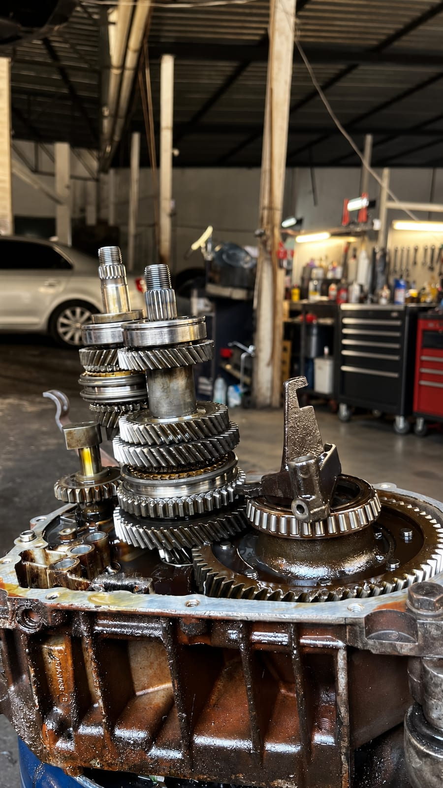

Um sintoma, várias causas possíveis
Uma marcha que não entra pode ter relação com embreagem, acionamento, trambulador ou componentes internos. Um tranco pode vir de coxim, adaptação, eletrônica ou desgaste mecânico. Trocar uma peça sem separar essas hipóteses custa tempo e pode não resolver.
O que ajuda no diagnóstico
- modelo, ano e quilometragem do veículo;
- quando o sintoma começou e se está piorando;
- se aparece com o carro frio, quente ou em subida;
- serviços recentes e peças já substituídas;
- avisos ou luzes exibidos no painel.
A equipe combina essas informações com avaliação do carro, testes e inspeção. Se a desmontagem for necessária, isso é informado no atendimento.
Orçamento depois de entender a causa
A proposta é apresentar o que foi encontrado, quais peças ou operações são necessárias e o prazo estimado. Em falhas intermitentes, pode ser preciso reproduzir o comportamento antes de fechar a conclusão.
É possível diagnosticar só por mensagem?
A mensagem ajuda a direcionar, mas não substitui a avaliação do veículo. Sintomas semelhantes podem ter causas diferentes.
A luz do painel indica exatamente a peça?
Não. O código aponta o sistema ou condição observada. Testes complementares confirmam a origem.